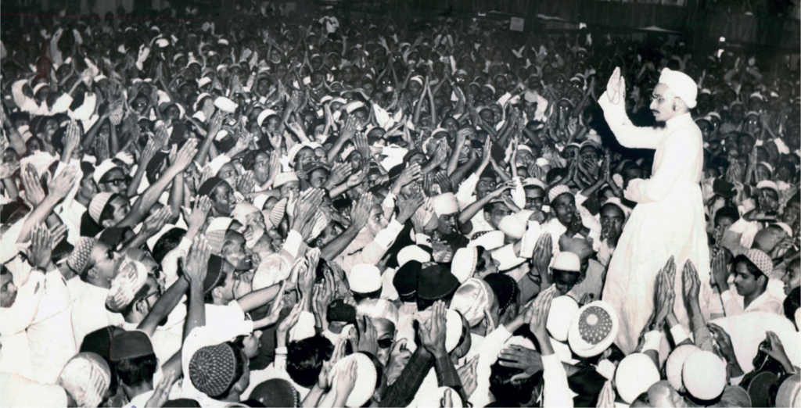
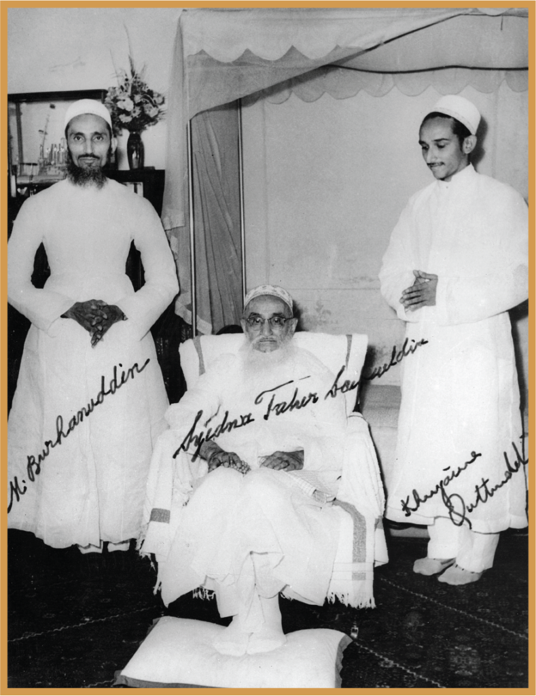
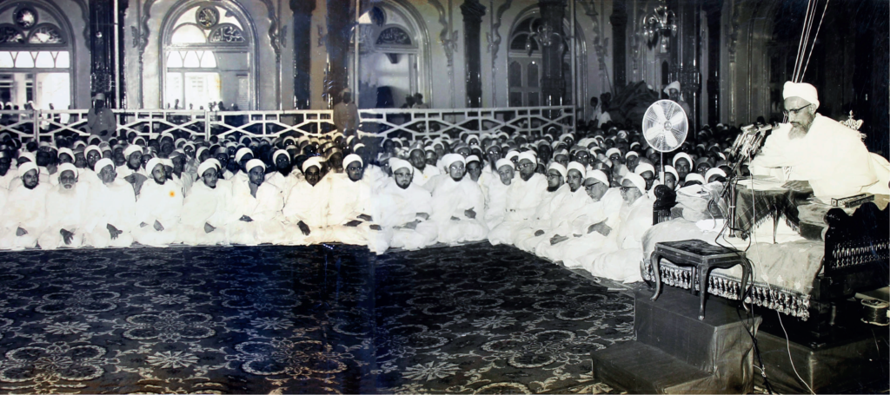
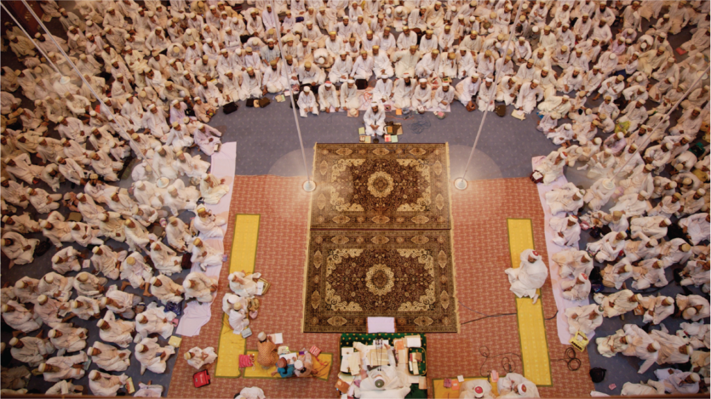
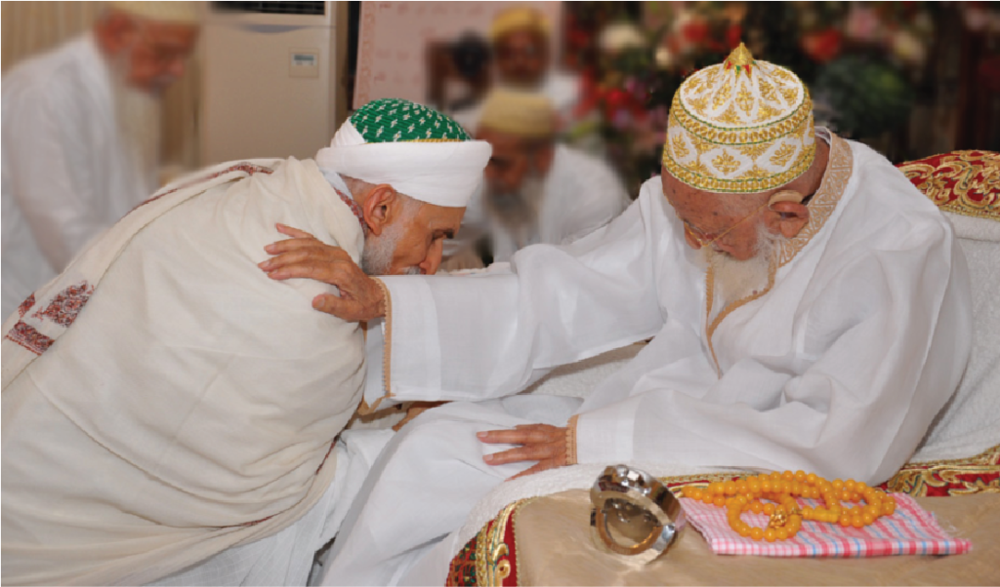
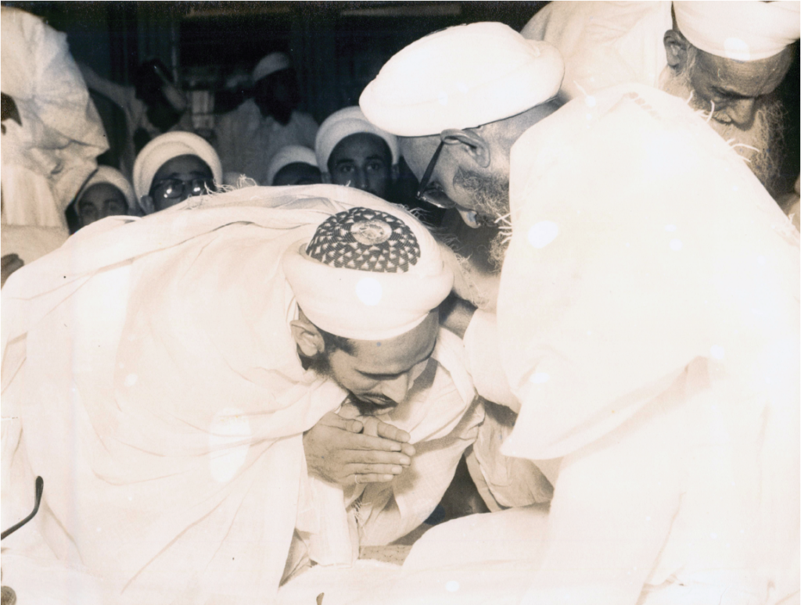
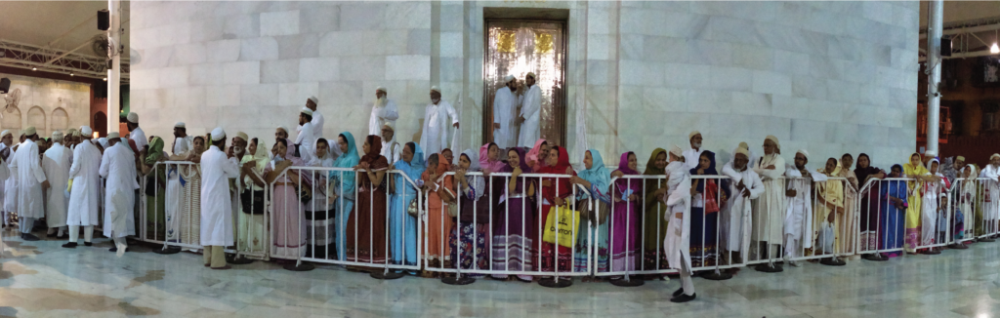

His Holiness Syedna Khuzaima Qutbuddin RA was the 53rd Dai al-Mutlaq. His life was dedicated to the service of Dawat and Imam-uz-Zaman AS, fighting to protect the safinah of Dawat till the very end. He stood unwaveringly at the helm of this ship, unflinchingly facing each seemingly impossible wave. Throughout his life, Syedna Qutbuddin’s conviction, sincerity, and compassion was a lighthouse for Mumineen as they toiled through this stormy world.

He served his father Syedna Taher Saifuddin RA, the 51st Dai al-Mutlaq, throughout his formative years leading into adulthood, then his brother Syedna Mohammed Burhanuddin RA for 50 years as his Mansoos and Mazoon, and then as the Dai al-Mutlaq he served Imam-uz-Zaman AS for 2 years and 3 months.

“I have created him with my own two hands.” A statement often repeated by the late scholar, Shaikh RajabAli Moosaji, describing and encapsulating Syedna Taher Saifuddin’s training of Syedna Khuzaima Qutbuddin.
Syedna Mohammed Burhanuddin’s RA Mazoon and Mansoos
In Syedna Burhanuddin’s RA era, Syedna Qutbuddin RA tirelessly and selflessly served by Syedna Burhanuddin’s side for over 50 years. He had the distinction of being the only Mazoon to simultaneously complete 50 years with the Dai who appointed him. Syedna Burhanuddin entrusted Syedna Qutbuddin with vital khidmats throughout his life, from large projects such as the construction of Raudat Tahera to sensitive diplomatic endeavours. He had full faith in Syedna Qutbuddin, once saying to him "Bhai is aware of all of Dawat's affairs." (Bhai toh Dawat na sagla umur par aagah chhe). Syedna Qutbuddin spent his days and nights for the wellbeing of Mumineen, and also founded various charities such as Zahra Hasanaat and The Qutbi Jubilee Scholarship Program.




